Inteligencia Artificial (IA)
La inteligencia artificial (IA) es el campo de la informática que se centra en crear sistemas capaces de realizar tareas que normalmente requieren inteligencia humana. Estas tareas incluyen el reconocimiento de voz, la toma de decisiones y el aprendizaje automático. La IA se divide en dos categorías:
- IA débil o estrecha: Diseñada para realizar una tarea específica, como asistentes virtuales (Siri, Alexa) y recomendadores de contenido.
- IA fuerte o general: Tiene la capacidad de aprender y realizar tareas intelectuales de manera similar a los humanos, aunque aún está en desarrollo.
Computación en la Nube
La computación en la nube permite el acceso a recursos informáticos a través de internet, ofreciendo flexibilidad y escalabilidad a las empresas. Esto incluye almacenamiento, bases de datos, servidores y redes. Las ventajas de la computación en la nube son:
- Escalabilidad: Permite aumentar o reducir los recursos según las necesidades del usuario.
- Costo reducido: Elimina la necesidad de invertir en hardware costoso y mantenimiento de infraestructura.
- Accesibilidad: Los servicios pueden ser accedidos desde cualquier lugar con conexión a internet.
- Actualizaciones automáticas: Los proveedores de nube gestionan la actualización de software y hardware.
- Flexibilidad: Soporta una amplia variedad de herramientas y plataformas, permitiendo a las empresas elegir las soluciones más adecuadas.
Ciberseguridad
La ciberseguridad se ocupa de proteger los sistemas informáticos y las redes contra ataques maliciosos. Esto incluye la protección de datos, la prevención de brechas de seguridad y la gestión de riesgos. Los principales componentes de la ciberseguridad son:
- Seguridad de la red: Protege la infraestructura de red de ataques como malware, ransomware, phishing y ataques de denegación de servicio (DDoS).
- Seguridad de la información: Garantiza la confidencialidad, integridad y disponibilidad de los datos, evitando accesos no autorizados.
Gestión de Tecnologías
La gestión de tecnologías se refiere al proceso de planificar, implementar, supervisar y mantener tecnologías dentro de una organización para mejorar su eficiencia, competitividad y capacidad de innovación. Involucra la administración de recursos tecnológicos, desde infraestructura hasta software.
Principales áreas en la gestión de tecnologías:
- Selección y evaluación de tecnologías: Analiza las necesidades de la organización para elegir las tecnologías más adecuadas.
- Planificación estratégica tecnológica: Integra la tecnología con la estrategia general del negocio.
- Implementación tecnológica: Asegura una correcta integración con sistemas y procesos existentes.
Laberintos
Laberinto 1
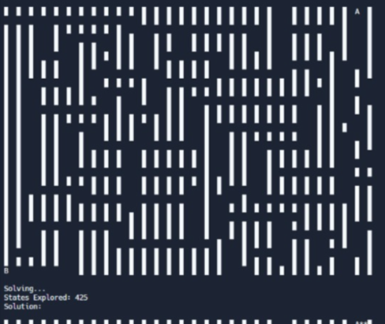
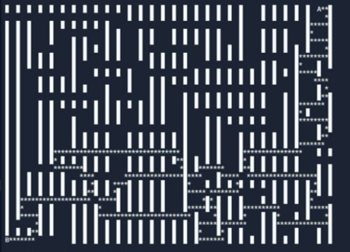
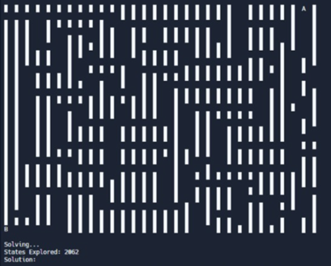
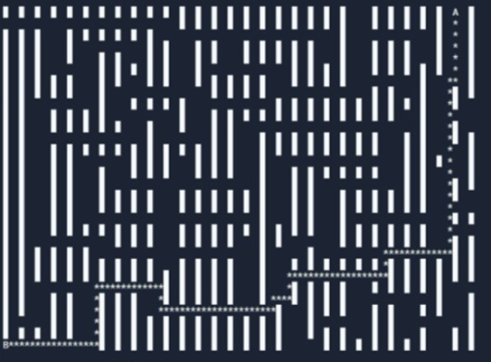
Laberinto 2
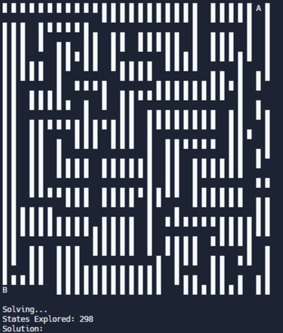
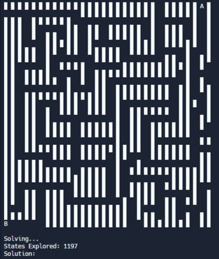
Comparación de Laberinto 1 y Laberinto 2
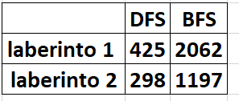
Explicación del Código
La siguiente es una explicación del código utilizado para entrenar un modelo de red neuronal en Python utilizando TensorFlow:
Importación de bibliotecas: Se importan TensorFlow (para crear y entrenar redes neuronales) y NumPy (para trabajar con arreglos numéricos).
import numpy as np
import tensorflow as tf
Definición de datos: Se crean dos arreglos de NumPy. Celsius contiene temperaturas en grados Celsius, y Fahrenheit tiene sus equivalentes en grados Fahrenheit. Ambos arreglos son de tipo float.
celsius = np.array([-40, -10, 0, 8, 15, 22, 38], dtype=float)
fahrenheit = np.array([-40, 14, 32, 46, 59, 72, 100], dtype=float)
Código comentado: Aquí se define una capa densa simple (con una sola neurona) y un modelo secuencial. Este código está comentado, así que no se ejecuta.
# capa = tf.keras.layers.Dense(units=1, input_shape=[1])
# modelo = tf.keras.Sequential([capa])
Definición de capas: Se definen tres capas en el modelo:
oculta1 = tf.keras.layers.Dense(units=3, input_shape=[1])
oculta2 = tf.keras.layers.Dense(units=3)
salida = tf.keras.layers.Dense(units=1)
Creación del modelo: Se construye un modelo secuencial apilando las capas definidas anteriormente.
modelo = tf.keras.Sequential([oculta1, oculta2, salida])
Compilación del modelo: Se define el optimizador y la función de pérdida para el modelo.
modelo.compile(
optimizer=tf.keras.optimizers.Adam(0.1),
loss='mean_squared_error'
)
Entrenamiento del modelo: El modelo se entrena utilizando los datos de Celsius y Fahrenheit durante 1000 épocas.
historial = modelo.fit(celsius, fahrenheit, epochs=1000, verbose=False)
Visualización de la pérdida: Se utiliza Matplotlib para graficar la magnitud de la pérdida a través de las épocas de entrenamiento.
import matplotlib.pyplot as plt
plt.plot(historial.history["loss"])
plt.xlabel("# Época")
plt.ylabel("Magnitud de pérdida")
Predicción: Se utiliza el modelo entrenado para predecir la temperatura en Fahrenheit correspondiente a 100 grados Celsius.
resultado = modelo.predict([100.0])
Mostrar resultado: Se imprime el resultado de la predicción.
print("El resultado es " + str(resultado) + " Fahrenheit!")
Algoritmo de Búsqueda
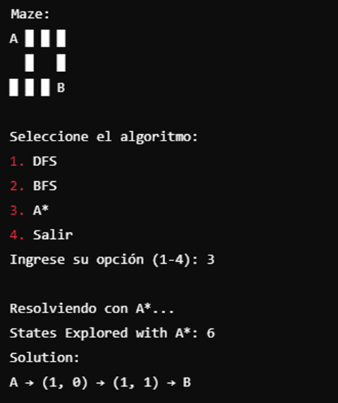
Comentarios sobre el archivo logic.py
mport itertools
class Sentence():
"""
Clase base para representar una oración lógica.
"""
def evaluate(self, model):
"""
Evalúa la oración lógica utilizando un modelo.
En este caso, es un método abstracto que será implementado en clases derivadas.
"""
raise Exception("nada que evaluar") # Excepción si no se implementa en una subclase.
def formula(self):
"""
Devuelve una representación de la fórmula lógica en forma de cadena de texto.
"""
return ""
def symbols(self):
"""
Devuelve un conjunto de todos los símbolos presentes en la oración lógica.
"""
return set()
@classmethod
def validate(cls, sentence):
"""
Valida si un objeto es una instancia de la clase Sentence.
"""
if not isinstance(sentence, Sentence):
raise TypeError("debe ser una oración lógica") # Lanza un error si no es del tipo esperado.
@classmethod
def parenthesize(cls, s):
"""
Coloca paréntesis en una expresión si no los tiene ya.
"""
def balanced(s):
"""
Verifica si una cadena tiene paréntesis balanceados.
"""
count = 0
for c in s:
if c == "(":
count += 1
elif c == ")":
if count <= 0:
return False # Retorna False si encuentra un ')' sin su correspondiente '('.
count -= 1
return count == 0 # Retorna True si todos los paréntesis están balanceados.
# Verifica si la cadena necesita paréntesis.
if not len(s) or s.isalpha() or (
s[0] == "(" and s[-1] == ")" and balanced(s[1:-1])
):
return s
else:
return f"({s})" # Agrega paréntesis si es necesario.
class Symbol(Sentence):
"""
Representa un símbolo lógico.
"""
def _init_(self, name):
self.name = name # Asigna el nombre al símbolo.
def _eq_(self, other):
return isinstance(other, Symbol) and self.name == other.name # Compara dos símbolos.
def _hash_(self):
return hash(("symbol", self.name)) # Genera un hash único para el símbolo.
def _repr_(self):
return self.name # Devuelve la representación en cadena del símbolo.
def evaluate(self, model):
"""
Evalúa el valor del símbolo en un modelo dado.
"""
try:
return bool(model[self.name]) # Retorna el valor del símbolo en el modelo.
except KeyError:
raise EvaluationException(f"variable {self.name} no está en el modelo") # Error si no existe en el modelo.
def formula(self):
return self.name # Retorna el nombre del símbolo.
def symbols(self):
"""
Devuelve el conjunto que contiene solo este símbolo.
"""
return {self.name} # Retorna un conjunto con el símbolo.
class Not(Sentence):
"""
Representa una negación lógica.
"""
def _init_(self, operand):
Sentence.validate(operand) # Valida que el operando sea una oración lógica.
self.operand = operand # Asigna el operando.
def _eq_(self, other):
return isinstance(other, Not) and self.operand == other.operand # Compara dos negaciones.
def _hash_(self):
return hash(("not", hash(self.operand))) # Genera un hash único para la negación.
def _repr_(self):
return f"Not({self.operand})" # Devuelve la representación en cadena de la negación.
def evaluate(self, model):
"""
Evalúa la negación, invirtiendo el valor del operando.
"""
return not self.operand.evaluate(model) # Retorna el valor invertido del operando.
def formula(self):
return "¬" + Sentence.parenthesize(self.operand.formula()) # Retorna la fórmula en notación lógica.
def symbols(self):
return self.operand.symbols() # Retorna los símbolos del operando.
class And(Sentence):
"""
Representa una conjunción lógica (Y).
"""
def _init_(self, *conjuncts):
for conjunct in conjuncts:
Sentence.validate(conjunct) # Valida cada conjunción.
self.conjuncts = list(conjuncts) # Asigna la lista de conjunciones.
def _eq_(self, other):
return isinstance(other, And) and self.conjuncts == other.conjuncts # Compara dos conjunciones.
def _hash_(self):
return hash(
("and", tuple(hash(conjunct) for conjunct in self.conjuncts)) # Genera un hash único para la conjunción.
)
def _repr_(self):
conjunctions = ", ".join([str(conjunct) for conjunct in self.conjuncts]) # Crea una representación en cadena.
return f"And({conjunctions})"
def add(self, conjunct):
"""
Añade un nuevo conjunción a la lista.
"""
Sentence.validate(conjunct) # Valida la nueva conjunción.
self.conjuncts.append(conjunct) # Añade la conjunción a la lista.
def evaluate(self, model):
"""
Evalúa si todas las conjunciones son verdaderas.
"""
return all(conjunct.evaluate(model) for conjunct in self.conjuncts) # Retorna True si todas son verdaderas.
def formula(self):
"""
Devuelve la fórmula de la conjunción.
"""
if len(self.conjuncts) == 1:
return self.conjuncts[0].formula() # Si solo hay una conjunción, retorna su fórmula.
return " ∧ ".join([Sentence.parenthesize(conjunct.formula())
for conjunct in self.conjuncts]) # Retorna la fórmula de todas las conjunciones.
def symbols(self):
return set.union(*[conjunct.symbols() for conjunct in self.conjuncts]) # Retorna la unión de los símbolos.
class Or(Sentence):
"""
Representa una disyunción lógica (O).
"""
def _init_(self, *disjuncts):
for disjunct in disjuncts:
Sentence.validate(disjunct) # Valida cada disyunción.
self.disjuncts = list(disjuncts) # Asigna la lista de disyunciones.
def _eq_(self, other):
return isinstance(other, Or) and self.disjuncts == other.disjuncts # Compara dos disyunciones.
def _hash_(self):
return hash(
("or", tuple(hash(disjunct) for disjunct in self.disjuncts)) # Genera un hash único para la disyunción.
)
def _repr_(self):
disjuncts = ", ".join([str(disjunct) for disjunct in self.disjuncts]) # Crea una representación en cadena.
return f"Or({disjuncts})"
def evaluate(self, model):
"""
Evalúa si al menos una de las disyunciones es verdadera.
"""
return any(disjunct.evaluate(model) for disjunct in self.disjuncts) # Retorna True si alguna es verdadera.
def formula(self):
"""
Devuelve la fórmula de la disyunción.
"""
if len(self.disjuncts) == 1:
return self.disjuncts[0].formula() # Si solo hay una disyunción, retorna su fórmula.
return " ∨ ".join([Sentence.parenthesize(disjunct.formula())
for disjunct in self.disjuncts]) # Retorna la fórmula de todas las disyunciones.
def symbols(self):
return set.union(*[disjunct.symbols() for disjunct in self.disjuncts]) # Retorna la unión de los símbolos.
class Implication(Sentence):
"""
Representa una implicación lógica (si... entonces...).
"""
def _init_(self, antecedent, consequent):
Sentence.validate(antecedent) # Valida el antecedente.
Sentence.validate(consequent) # Valida el consecuente.
self.antecedent = antecedent # Asigna el antecedente.
self.consequent = consequent # Asigna el consecuente.
def _eq_(self, other):
return (isinstance(other, Implication)
and self.antecedent == other.antecedent
and self.consequent == other.consequent) # Compara dos implicaciones.
def _hash_(self):
return hash(("implies", hash(self.antecedent), hash(self.consequent))) # Genera un hash único para la implicación.
def _repr_(self):
return f"Implication({self.antecedent}, {self.consequent})" # Devuelve la representación en cadena de la implicación.
def evaluate(self, model):
"""
Evalúa la implicación.
"""
return ((not self.antecedent.evaluate(model))
or self.consequent.evaluate(model)) # Retorna True si se cumple la implicación.
def formula(self):
antecedent = Sentence.parenthesize(self.antecedent.formula()) # Agrega paréntesis al antecedente.
consequent = Sentence.parenthesize(self.consequent.formula()) # Agrega paréntesis al consecuente.
return f"{antecedent} => {consequent}" # Retorna la fórmula de la implicación.
def symbols(self):
return set.union(self.antecedent.symbols(), self.consequent.symbols()) # Retorna la unión de los símbolos.
class Biconditional(Sentence):
"""
Representa una bicondicional lógica (si y solo si).
"""
def _init_(self, left, right):
Sentence.validate(left) # Valida el lado izquierdo.
Sentence.validate(right) # Valida el lado derecho.
self.left = left # Asigna el lado izquierdo.
self.right = right # Asigna el lado derecho.
def _eq_(self, other):
return (isinstance(other, Biconditional)
and self.left == other.left
and self.right == other.right) # Compara dos bicondicionales.
def _hash_(self):
return hash(("biconditional", hash(self.left), hash(self.right))) # Genera un hash único para la bicondicional.
def _repr_(self):
return f"Biconditional({self.left}, {self.right})" # Devuelve la representación en cadena de la bicondicional.
def evaluate(self, model):
"""
Evalúa si ambas proposiciones tienen el mismo valor de verdad.
"""
return ((self.left.evaluate(model)
and self.right.evaluate(model))
or (not self.left.evaluate(model)
and not self.right.evaluate(model))) # Retorna True si ambos son verdaderos o ambos son falsos.
def formula(self):
left = Sentence.parenthesize(str(self.left)) # Agrega paréntesis al lado izquierdo.
right = Sentence.parenthesize(str(self.right)) # Agrega paréntesis al lado derecho.
return f"{left} <=> {right}" # Retorna la fórmula de la bicondicional.
def symbols(self):
return set.union(self.left.symbols(), self.right.symbols()) # Retorna la unión de los símbolos.
def model_check(knowledge, query):
"""
Verifica si la base de conocimiento implica una consulta.
"""
def check_all(knowledge, query, symbols, model):
"""
Verifica si la base de conocimiento implica la consulta en un modelo dado.
"""
# Si el modelo tiene una asignación para cada símbolo
if not symbols:
# Si la base de conocimiento es verdadera en el modelo, entonces la consulta también debe ser verdadera
if knowledge.evaluate(model):
return query.evaluate(model) # Retorna True si se cumple la consulta.
return True # Si la base de conocimiento es falsa, la consulta no se puede inferir.
else:
# Elige uno de los símbolos restantes no utilizados
remaining = symbols.copy()
p = remaining.pop() # Toma uno de los símbolos restantes.
# Crea un modelo donde el símbolo es verdadero
model_true = model.copy() # Copia el modelo actual.
model_true[p] = True # Asigna True al símbolo.
# Crea un modelo donde el símbolo es falso
model_false = model.copy() # Copia el modelo actual.
model_false[p] = False # Asigna False al símbolo.
# Asegura que la implicación se sostiene en ambos modelos
return (check_all(knowledge, query, remaining, model_true) and
check_all(knowledge, query, remaining, model_false))
# Obtiene todos los símbolos en ambos conocimiento y consulta
symbols = set.union(knowledge.symbols(), query.symbols()) # Une los símbolos del conocimiento y de la consulta.
# Verifica que el conocimiento implica la consulta
return check_all(knowledge, query, symbols, dict()) # Inicia la verificación con un modelo vacío.
El archivo logic.py contiene herramientas para la creación de modelos lógicos,
donde se pueden definir símbolos lógicos como proposiciones (P, Q, etc.) y
aplicar operadores lógicos como AND, OR, NOT, e Implications.
También permite evaluar proposiciones dentro de una base de conocimiento (KB),
y usar funciones como model_check para verificar la validez de estas proposiciones
en diferentes modelos de verdad.
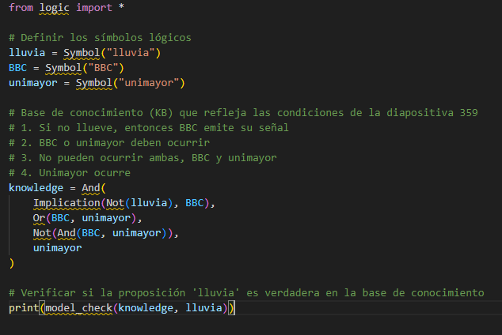
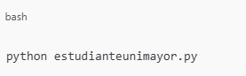
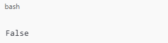